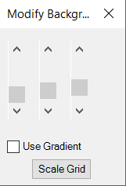

Tutorial: Introduction to the Configuration Object showed how to use attribute settings from the Configuration object, but there are many more properties available in the Configuration. For example, settings for Importing and Exporting files are found in such objects as IgesFile and ParasolidFile. Dimensioning Parameters are in ConfigurationDimension and settings for the Background are in ConfigurationBackground. General options such as properties for grid parameters and the showing of system axes are also found in the Configuration.
The tutorial will cover a couple of examples.
- Scaling the grid related parameters:
private void ScaleGrid()
{
var scaleFactor = 1.0;
if (RequestUserInput("Enter Grid Scale Factor", "Scale Factor", ref scaleFactor))
{
EspritApplication.Configuration.EnableGridMode = true;
EspritApplication.Configuration.GridAngle *= scaleFactor;
if (EspritApplication.Document.SystemUnit == EspritConstants.espUnitType.espInch)
{
EspritApplication.Configuration.GridDxInch *= scaleFactor;
EspritApplication.Configuration.GridDyInch *= scaleFactor;
EspritApplication.Configuration.GridDzInch *= scaleFactor;
EspritApplication.Configuration.GridRadiusInch *= scaleFactor;
}
if (EspritApplication.Document.SystemUnit == EspritConstants.espUnitType.espMetric)
{
EspritApplication.Configuration.GridDxMetric *= scaleFactor;
EspritApplication.Configuration.GridDyMetric *= scaleFactor;
EspritApplication.Configuration.GridDzMetric *= scaleFactor;
EspritApplication.Configuration.GridRadiusMetric *= scaleFactor;
}
}
}
Go to Options to confirm the new Grid settings. Notice that the grid parameters are directly under the Configuration object.
- Playing with a bachground. First, create a form with scroll bars for each RGB color component and a checkbox to set the gradient property. Arrange the controls on the form, resize and align them if you like. When you are finished, your form should look similar to the one below. Note that the sbRed bar is on the left, sbGreen in the middle, and sbBlue on the right:

Set the (Name) and some other properties of each control as shown in the table below:
| Object Type | Name | Properties |
| UserForm | frmGridBgLangTutorial | Caption = Modify Background, ShowModal = False |
| ScrollBar | sbRed | Max = 255, Min = 0, Orientation = 0 - fmOrientationVertical |
| ScrollBar | sbGreen | Max = 255, Min = 0, Orientation = 0 - fmOrientationVertical |
| ScrollBar | sbBlue | Max = 255, Min = 0, Orientation = 0 - fmOrientationVertical |
| CheckBox | chkUseGradient | Caption = Use Gradient |
Assosiate the following event procedures with the form:
private void OnUseGradientCheckBoxCheckedChanged(object sender, EventArgs e)
{
EspritApplication.Configuration.ConfigurationBackground.Gradient = _useGradientCheckBox.Checked;
Document.Refresh();
}
private void OnScrollBarValueChanged(object sender, EventArgs e)
{
EspritApplication.Configuration.ConfigurationBackground.Color = ColorHelper.ColorToUInt(System.Drawing.Color.FromArgb(_rScrollBar.Value, _gScrollBar.Value, _bScrollBar.Value));
Document.Refresh();
}
The following function is used to convert the color value:
public static uint ColorToUInt(System.Drawing.Color color)
{
var value = (uint)((color.A << 24) | (color.B << 16) |
(color.G << 8) | color.R);
return value;
}